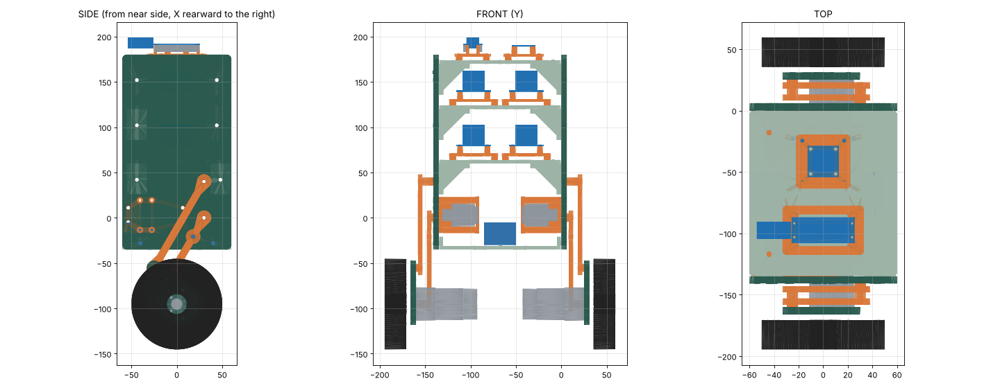

HUX / V1-PROOF / Revision R05
R05 assembly in progressWheeled
balancing robot.
A compact two-wheel robot. It must balance, drive indoors and stop safely. The legs stay locked at 30° in V1-PROOF. R05 puts the hips at the rear and the battery in the body.
AN-01 / Live anatomy / R05
See how Hux moves.
Top, side, front and 3D views at one scale. The first chapter shows the leg geometry through 15–40°. V1-PROOF locks the legs at 30°. The robot drives, and the x-ray shows the boards and the harness. Drag the 3D view to turn it.
CAD estimates with assumed mass positions. Nothing in these views is a physical measurement.
Current build / R05 kit
Everything for R05 in one place.
Use these documents for the robot on the bench now. Earlier revisions are superseded.
01 / Assemble
R05 assembly guideParts, hardware, tools and eight steps with CAD viewsPrint and fit recordPlate status and the measurements to recordPrint platesFive Bambu Studio projects in PLA, with the print log
- Target mass
- 2.5 kg 3.0 kg maximum
- Powered axes
- 2 2 wheel gearmotors
- Legs
- 30° Locked · hips in the next version
- Planning ceiling
- $900 With shipping & reserves
Project directory
One place for each part of the build.
Subsystem drawings, test work and support records each have a page.
Assembly & drawings
R05 body, general arrangement, wheel mount, joint details and the drawing register.
→ 02 / ElectricalWiring & control
The EL-01–07 wiring atlas, printable sheets, the architecture and the control software.
→ 03 / Build & testAssembly to validation
Current work, milestone gates, bench sessions and simulation evidence.
→ 04 / ProcurementParts & budget
Recorded orders, received inventory, remaining purchases and cost allowances.
→ 05 / DocumentationDocument library
Requirements, design references, checklists and decisions, by discipline.
→ History / SupersededRevisions R01–R04
Earlier print kits and fit records. Use them for history only.
→Active scope: pinned-leg balance first, then drive and slow height adjustment. Read the build brief →